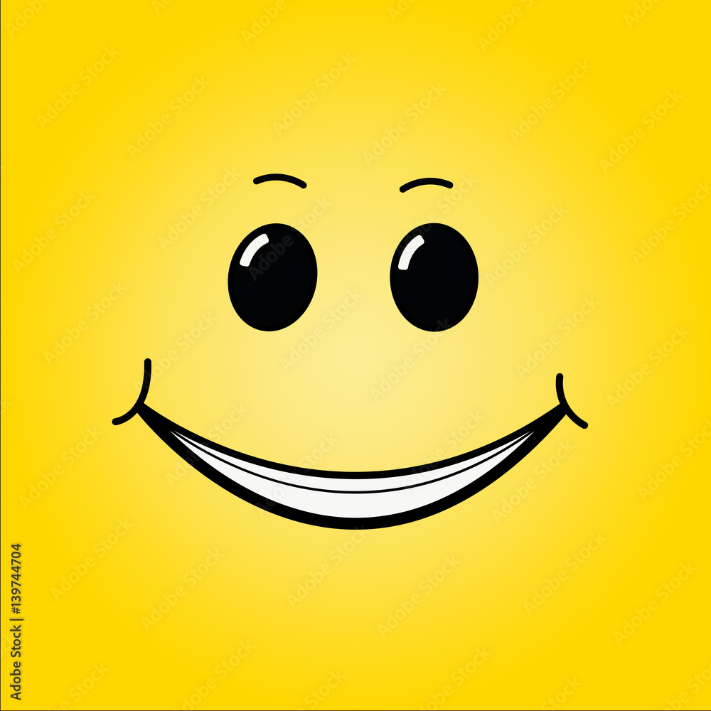
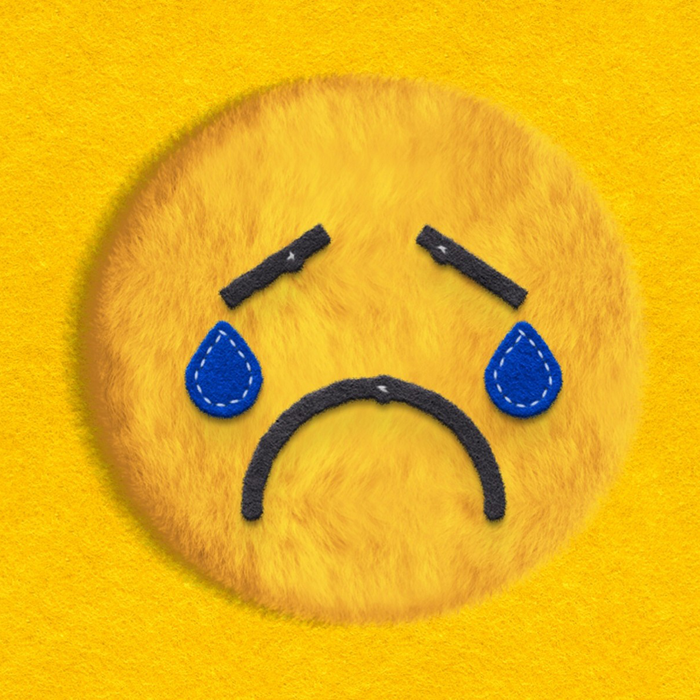

Description
Hi, I am Karna Bahadur Shrestha, I belong from beauriful country named Nepal. I am currently pursing Master's in Computer Science at Maharishi Internation University, Fairfield Iowa.
Class I am taking at MIU
- STC560A-The Science and Technology of Consciousness course!
- CS390-FPP-Fundamental Programming Practice
- CS401-MPP-Modern Programming Practice
- CS472-WAP-Web Application Programming
Favourite Movies
My Moods
Happy Mood:  Sad Mood: Fun Facts about my neighbors
- Ujjwal Humagain: he is a person with smiling face.
- Arjun Subedi: He loves to play Table-Tennis
Validate the webpage